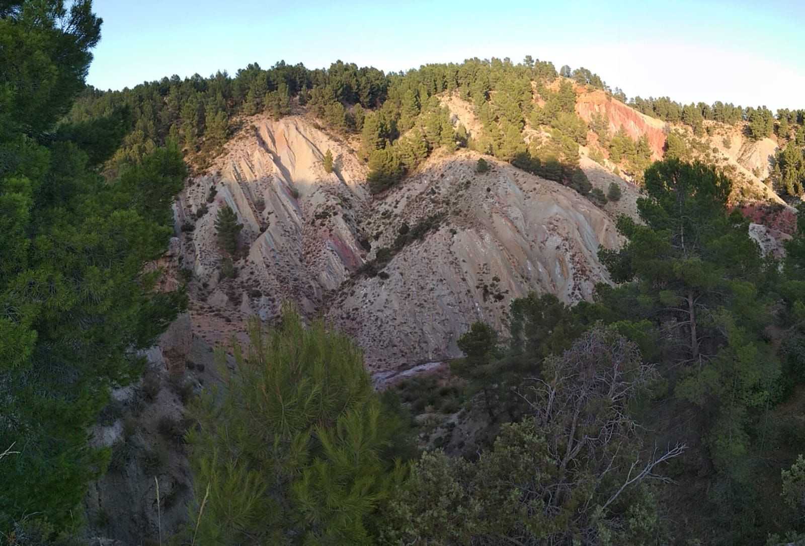

From antient times, magic has been an important part of our societies. Now we study it as if it never existed, and yet we can't help creating stories were magic is the most important element. That's why some of us wonder how was it when people really thought it was real, and that's why, in coursera for example, we can find courses explaining the Magic in Midle Ages. Here are some examples of the Schools in the Wizarding World of J.K. Rowling.